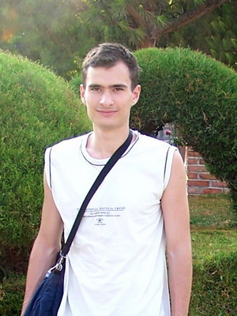

Mikhail A. Kuzovnikov | ||||
| About | Publications | |||
 |
Position: independent researcher About: graduated from the Moscow Institute of Physics and Technology, Department of General and Applied Physics, in 2009. The subject of his bachelor thesis is "Gigant tunneling effect of hydrogen in α-manganese". The subject of his master thesis is "The vibrational spectra of PdD1-xHx". In 2013, he defended a PhD thesis entitled "The structure, thermodynamical stability and vibrational spectra of high-pressure hydrides". In 2014–2017, he was appointed as a postdoctoral researcher in the High Pressure Group of the Institute of Physical Chemistry PAS, Warsaw, Poland. In 2018–2019, he was appointed as a postdoctoral researcher in the Multiphase Chemistry Department of the Max Planck Institute for Chemistry, Mainz, Germany. In 2021-2026, he was appointed as a postoctoral researcher at the Centre for Science at Extreme Conditions and Institute for Condensed Matter and Complex Systems, School of Physics and Astronomy of the University of Edinburgh. Areas of expertise: material science, high-pressure, hydrogen in solids, crystal structure, vibrational dynamics, superconductivity Web of Science: https://www.webofscience.com/wos/author/record/15578615 Address: Centre for Science at Extreme Conditions
Location: 3.3812 E - mail: m.kuzovnikov@ed.ac.uk |
M.A. Kuzovnikov © 2026 All rights reserved